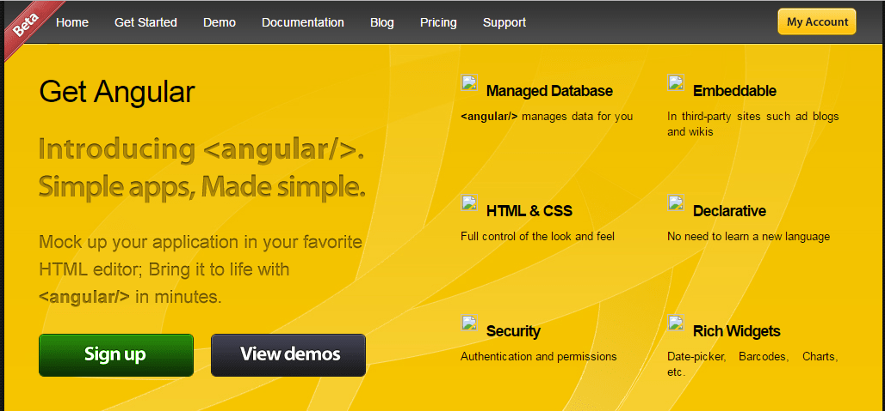

Design And DevelopmentA Melting Pot
Gone are the days when roles in web development and design were clearly delineated.
You had your graphic designers,
your web designers,
and your web developers.
Graphic designers needed to know their Adobe software.
Web designers needed to know their html and css.
Web developers needed to know their programming languages of choice, i.e., Java, PHP, C#, C++, Objective-C, what have you.
Designers designed the face of the web.
Developers developed the backend, the logic.
Then came along ECMAScript 2009.
And the WWW was slowly creeping into our lives.
Also in 2009, a little side project was created by developers Misko Havery and Adam Abrons called GetAngular.
It was meant to be an end-to-end tool that allowed web designers to interact with both the frontend and the backend.Andrew Austin, An Overview of AngularJS For Managers, August 27, 2014
I didn't want to simplify the application development process for developers.
I wanted to simplify it for web designers. People who don't know how to program.
Today that little side project is known as AngularJS.
Then there was Facebook's XHP.
In a video from OSCON 2014, Christopher Chedeau, Front End Engineer at Facebook, gave some background history about XHP and how it evolved into React.
In 2004, Mark Zuckerberg was still in his dorm room, and the way one wrote PHP at the time was string concatenation in order to render your markup.
It was a very easy way to program. You could be a backend engineer, a front end engineer, even someone who doesn't know how to program, and you're going to get it working. This is why PHP is so popular, and why so much of the web is built with it.
Facebook grew a lot using string concatenation, and it was working really well. But sometimes there was one big issue with it. Which is XSS Injections. So if you write this code, it's not secure.
If an attacker is about to insert any string he wants, he is going to be able to run arbitrary JavaScript in your page. The issue with this is, this JavaScript is going to be executed with the user's permission. So basically you take over the entire user account...
Since then, and up to time of video, Facebook moved a lot of the application logic into JavaScript because (they) didn't want to get the client-server roundtrip time. (They) tried a lot of different things with JavaScript that didn't work.
Then one of the Facebook Engineers, Jordan Walke, told his manager, "I'm going to port XHP to JavaScript. And he managed to convince him to give him 6 months (to do it).
The first time (Christopher Chedeau) heard about it, (he) was like, there is no way this is going to work, but if it does, this is going to be huge.
In 2013, Facebook was already using es6 syntax in their code, and it took (them) a week to write JSX.
Did you know that when Facebook "developed" XHP, as of 2013, only one blog post had been written about it? And as of today ... how many have been written about React?
Chris attributes this to the fact that Facebook waited so long to open source XHP. 6 years, as a matter of fact. They didn't make the same mistake with React.
React was first deployed on Facebook's newsfeed in 2011 and later on Instagram.com in 2012. It was open-sourced at JSConf US in May 2013.
And the rest is history ...
Today I'm going to talk about the relationship between development and design in a React Application, focusing on the client side (of course).
There are several ways of approaching the design of a React application.
CSS is the more traditional approach that has been around the longest.
If you are part of a team and have a web designer create the CSS for the project,
you might create the React component, and the designer create the CSS.
And any CSS you would write in your component's CSS file would be global. It could apply to any other component which used the same classes across the application.
Which is fine if that's what you want.
import React, { Component } from 'react';
import logo from './logo.svg';
import '../style/App.css';
import {
TodoForm,
TodoList,
Footer
} from './components/todo';
import {
addTodo,
generateId,
findById,
toggleTodo,
updateTodo,
removeTodo,
filterTodos
} from './lib/todoHelpers';
import {
pipe,
partial
} from './lib/utils';
import PropTypes from 'prop-types';
import {
loadTodos,
createTodo,
saveTodo,
destroyTodo
} from './lib/todoService';
.App {
text-align: center;
font-family: 'Inconsolata', monospace;
font-size: 16px;
}
POSTCSS is a bit different.
You can "modularize" your styles with partials,
so as to have better control over your CSS code base when it scales big time.
After all, working with smaller, more focused chunks is better.
BUT, the styles are still technically global.
And then you have Sass/Scss.
First released on November 28, 2006, Sass/Scss is great because you have all these really cool features at your disposal that extend CSS big time.
It allows you to use variables, nested rules, inline imports, and so much more.
Sass/Scss is so way out there in terms of CSS pre-processing features that I almost regard it as CSS programming.
In fact, Sass/Scss not only supports/extends the plain CSS property syntax, but it supports a small set of extensions called SassScript. SassScript allows properties to use variables, arithmetic, and extra functions. SassScript can be used in any property value.
You can experiment with SassScript in iTerm2/Terminal using the sass -i command.
Just make sure that you have Sass/Scss installed on your computer!
SassScript supports 8 data types.
numbers (1,2,3,10px),
strings of text with and without quotes("foo", 'bar', boo),
colors(pink, #cdcdcd, rgba(0, 0, 0, 0.7)),
booleans(true, false),
nulls(null),
list of values, separated by spaces or commas(3em 2em 0 1em, Helvetica, Arial, sans-serif),
maps from one value to another (key1: value1, key2: value2),
function references.
div {
hsl(0, 25%, 32%);
}
compiles to
div {
color: #663d3d;
}
$name: boo;
$attr: border;
p.#{$name} {
#{$attr}-color: pink;
}
compiles to
p.boo {
border-color: pink;
}
So why inline styles?
After all, CSS purists shun them.
I love CSS, POSTCSS, Sass/Scss.
But recently I came to love inline styles too.
Because inline styles are LOCAL to the component in which they are placed. In other words, they have local scope.
Whatever is placed directly within the component, stays in the component.
import React, {Component} from 'react';
const Button = (props) => {
const buttonStyle = {
background: 'pink',
color: 'rebeccapurple',
fontFamily: 'Inconsolata, monospace',
fontSize: '16px'
}
return (
<div>
<button onClick={props.clicked} style={buttonStyle}>{props.text}</button>
</div>
)
}
export default Button;
So I thought it would be fun to apply inline styles to a live project.
Visit (or click) the link below and either download the zip file or git clone the repo.
There are 4 branches:
master
radium
radium-media-queries
radium-pseudo-classes
Now let's add radium to the mix.
So why radium?
Not everything you can do with CSS can be done with inline styles.
Two biggies are @media-queries and @keyframes. Huge.
That's where radium comes to the rescue.
radium is already installed. We just need to import it in the appropriate places.
I created 3 other branches in case if you want to get fancy and split off your styles into the corresponding feature branches. It's up to you.
We are going to make this a 2 step process. First we'll import it only into Gallery.js and GalleryModal.js.
At the top of the Component file:
import Radium from 'radium';
At the bottom of the Component file:
export default Radium(Gallery); export default Radium(GalleryModal);
Now see if you can improve upon your inline styles. Again, the link to radium on Github for reference:
radium on Github
By now you are probably encountering issues with @media-queries and @keyframes. That's because we haven't implemented step 2 yet.
At the top of App.js:
import Radium, {StyleRoot} from 'radium';
Then at the bottom of App.js in the return statement:
return (
<StyleRoot>
<div className='App'></div>
</StyleRoot>
);
Then, at the bottom of App.js,
export default Radium(App);
Now see what happens. Refer to the radium documentation if necessary.
Commit your changes and cd out of evolution-design-dev-sass.
So what are CSS Modules and why would you even want to use them?
Some people want to keep their external stylesheets but want to localize their styles. That's where CSS Modules come in. We'll be using a CRA based version of our project for that.
First git clone or download the zip of the evolution-presentation-cra repo.
After you have npm installed, create a new branch in which you will eject out of CRA.
In order to enable CSS Modules, we have to eject. CRA does not support CSS Modules.
Purportedly full support is on the way with CRA 2. However, the release date is unknown.
First go into the new config directory and into the webpack.config.dev.js file.
Then locate the css rules within module:, and in options under importLoaders: 1, add:
modules: true,<br /> localIdentName: '[name]__[local]__[hash:base64:5]',
Next you want to import your classes from the stylesheet corresponding to the component you are styling.
This is pretty much the same as importing anything else into a component.
At the top of App.js
import appClasses from './App.css';
Then, for example:
return (
<div className={appClasses.App}></div>
);
It's really hard to say what is the "good" or "bad" way to style your application these days. Since we all are working with technology, and are always forward thinking, we SHOULD try new things.
In the end, we should go with what we think is best at any given time and for any particular situation.
I, for one, found that neither CSS, CSS Modules, nor Radium provided me with 100% viable solutions. I ended up with a hybrid. As Michele Bertoli of Facebook states in his article Inline Styles are so 2016,
"I think that being a front-ender nowadays is one of best jobs in the world because we have new packages and new techniques to play with everyday. My advice is to always use the right tool for you project, no matter if it breaks the rules and no matter if it goes against what you learnt in the past ten years: leave your comfort zone and have fun!"